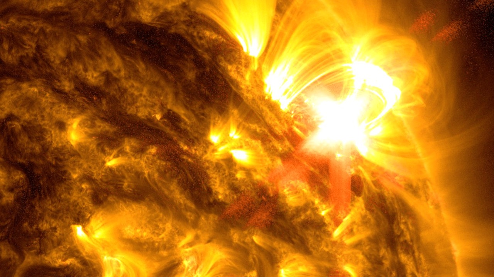
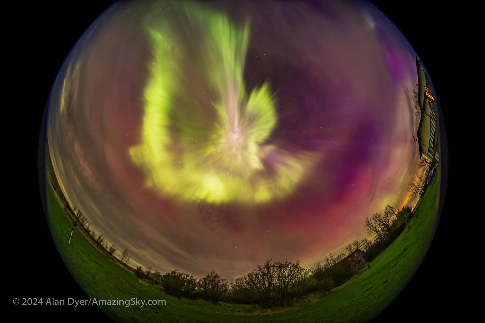
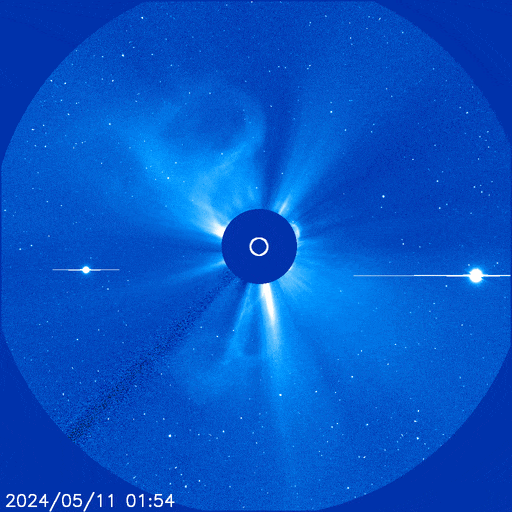
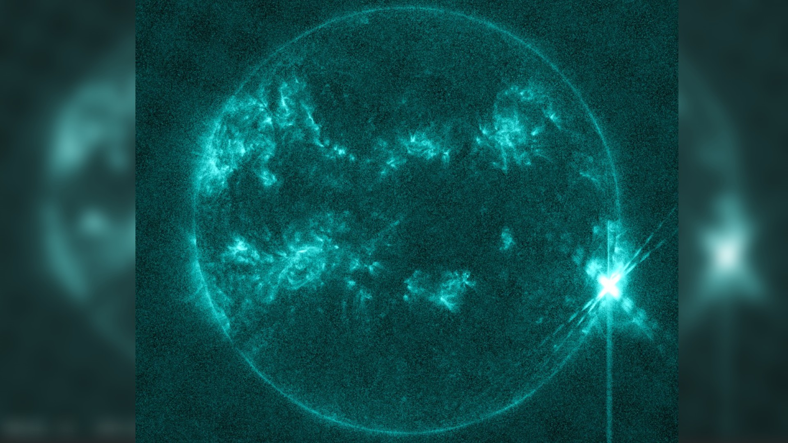

In May 2024, Earth experienced astonishing solar storms that impacted daily life and technology worldwide. From powerful solar flares to mesmerizing light displays, get ready to uncover the key events that shaped this historic month.
Explore the key events of the May 2024 solar storms, including powerful solar flares, CMEs, and auroras visible across the globe.
NASA’s Solar Dynamics Observatory recorded 82 solar flares, mostly from active regions AR 13663 and AR 13664.
These solar flares were the start of what would become one of the strongest solar storms in 20 years.

Two powerful X-class solar flares were observed, signaling the onset of a massive solar storm.
These flares, followed by multiple CMEs, stormed toward Earth, causing major geomagnetic activity.
As CMEs hit Earth, they triggered a G5 geomagnetic storm, the strongest since 2003.
The storm produced brilliant auroras visible in many parts of the world, including lower latitudes like the southern U.S. and northern India.
The storm persisted, with CMEs continuing to affect Earth's magnetic field.
This historic event caused major auroras and technology disruptions, including satellite drag and communication issues.
The Sun released the largest solar flare of Solar Cycle 25, classified as X8.7.
This powerful flare caused further disturbances to satellites and communications systems.
